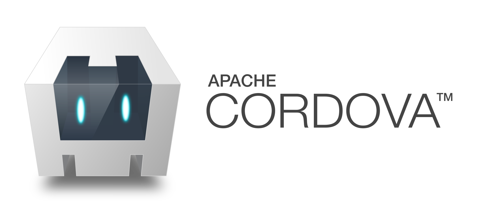
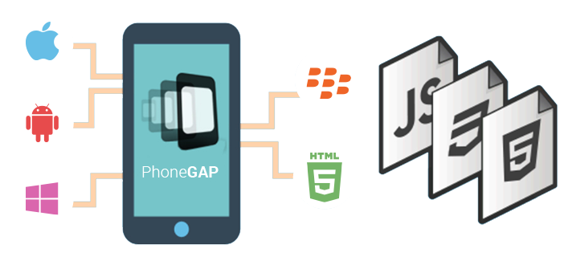

PhoneGap
Historia de PhoneGap

Apache Cordova era un popular entorno de desarrollo de aplicaciones móviles, originalmente creado por Nitobi. Adobe compró Nitobi en 2011, le cambió el nombre a PhoneGap, y más tarde liberó una versión de código abierto del software llamado Apache Cordova.
Regresar
Maricruz Peinado Jara - Marzo 2019
PhoneGap
Características de PhoneGap

PhoneGap permite a los programadores desarrollar aplicaciones para dispositivos móviles utilizando herramientas genéricas tales como JavaScript, HTML5 y CSS3. Las aplicaciones resultantes son híbridas, es decir que no son realmente aplicaciones nativas al dispositivo (ya que el renderizado se realiza mediante vistas web y no con interfaces gráficas específicas de cada sistema), pero no se tratan tampoco de aplicaciones web (teniendo en cuenta que son aplicaciones que son empaquetadas para poder ser desplegadas en el dispositivo incluso trabajando con el API del sistema nativo).
Regresar
Maricruz Peinado Jara - Marzo 2019